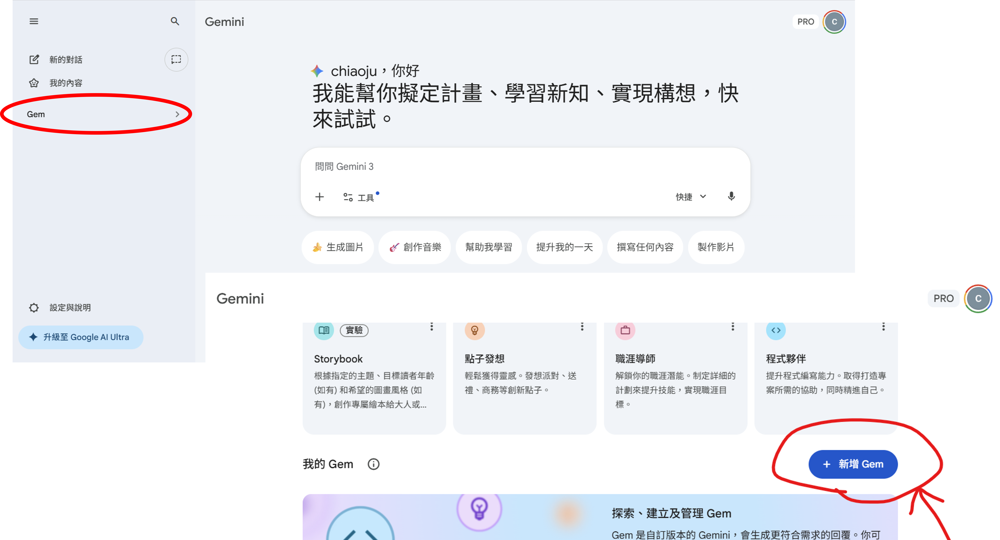
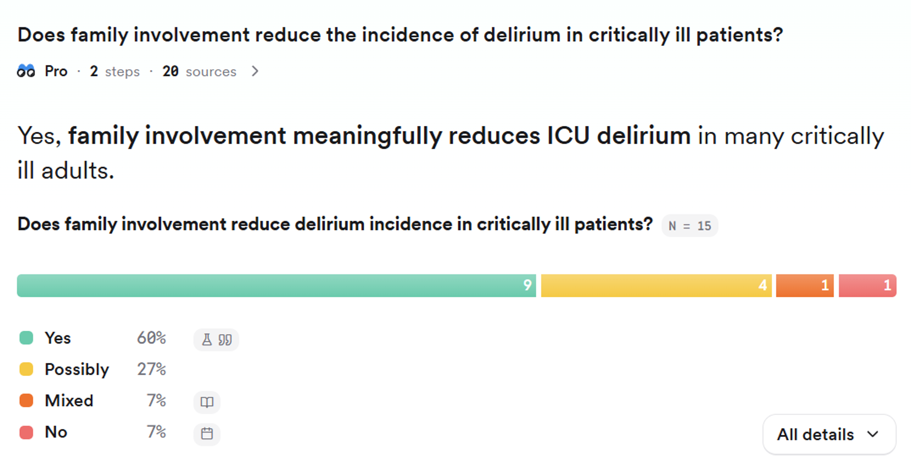
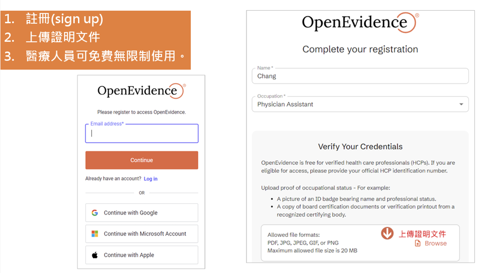
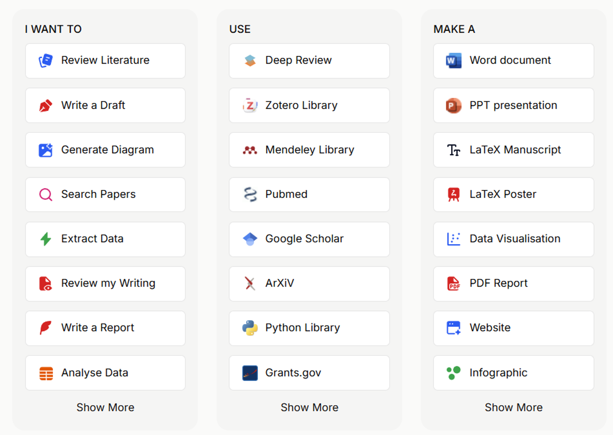

SR & Meta-analysis Journal Club · 004 · 2026.03.26
AI 輔助文獻搜尋
從 PICO 到系統性回顧
臺北榮民總醫院 胸腔加護病房 · 梁巧儒
00

About Me
梁巧儒
Chiao-Ju Liang
🏥
臺北榮民總醫院
護理部 · 胸腔加護病房（TICU）
護理部 · 胸腔加護病房（TICU）
🎓
國立陽明交通大學
護理學研究所 碩士
護理學研究所 碩士
🏫
台灣實證護理學會
AI 輔助實證護理工作坊講師
AI 輔助實證護理工作坊講師
✉
crliang@vghtpe.gov.tw
01
Today
90 分鐘
學會這件事
01
臨床發想 → AI 生成 PICO + 搜尋式
02
七大 AI 工具詳解與比較
03
文獻評讀：Asta × ROB 2.0 輔助
04
NotebookLM：封閉式個人實證大腦
05
Vibe Coding：自製 SR 自動化工具
90'
SR Journal Club · 004
臺北榮民總醫院 胸腔加護病房
梁巧儒
2026.03.26
梁巧儒
2026.03.26
02
各大 LLM 比較 · 學術研究與文本處理 · 2026
Claude
Pro $20/月
Pro $20/月
✦ 優點
長文脈理解學術寫作精準邏輯推理佳
✕ 缺點
無即時搜尋無圖像生成
學術適用度
文本分析
文獻整理
即時資訊
ChatGPT
Plus $20/月
Plus $20/月
✦ 優點
生態系豐富插件多元圖像生成
✕ 缺點
引用需驗證偶有幻覺
學術適用度
文本分析
文獻整理
即時資訊
Gemini
AI Pro $19.99/月
AI Pro $19.99/月
✦ 優點
超長上下文Google 整合即時搜尋
✕ 缺點
需 Google 生態幻覺問題
學術適用度
文本分析
文獻整理
即時資訊
Perplexity
Pro $20/月
Pro $20/月
✦ 優點
即時引用來源學術搜尋強PDF 分析
✕ 缺點
長文創作弱深度分析有限
學術適用度
文本分析
文獻整理
即時資訊
Grok
SuperGrok $30/月
SuperGrok $30/月
✦ 優點
X 平台即時推理能力強快速回應
✕ 缺點
學術文本弱繁中差
學術適用度
文本分析
文獻整理
即時資訊
學術推薦：深度文本分析 → Claude；最新文獻查找 → Perplexity；Google Workspace 用戶 → Gemini + NotebookLM
03
PICO · 臨床發想
從臨床問題到搜尋字串
P
Population
intubated geriatric ICU patients
intubated geriatric ICU patients
I
Intervention
family participation / engagement
family participation / engagement
C
Comparison
usual care
usual care
O
Outcome
delirium incidence / duration
delirium incidence / duration
搜尋式產出後務必人工驗證 MeSH
Gem — AI 輔助 PICO 建立示範

1 / 5
04
Prompt Engineering
三層架構
WHO · 角色設定
「你是 SR 文獻搜尋專家」
WHAT · 任務描述
「為以下 PICO 產生 PubMed 搜尋字串」
HOW · 輸出規格
「MeSH terms + 同義詞，可直接貼 PubMed」
實際 Prompt
# 輸入給 Claude / Gemini
你是 systematic review 的文獻搜尋專家。
請為以下 PICO 產生 PubMed 搜尋式：
P: intubated geriatric ICU patients
I: family participation / engagement
C: usual care
O: delirium incidence, duration
輸出：MeSH [MeSH] + 同義詞 [tiab]
格式：完整布林邏輯搜尋式
⚠ AI 產出後須人工驗證 MeSH；方法學需透明描述 AI 使用方式
05
工具層級
三個層級的 AI 應用
Lv.1 · 基礎
Claude / ChatGPT + PICO
輸入臨床問題 → PICO → 搜尋式
輸入臨床問題 → PICO → 搜尋式
適合：初次嘗試 AI 輔助 SR
Lv.2 · 進階
Elicit + Consensus + Asta
AI 搜尋 → 跨文獻比較表 → 評讀
AI 搜尋 → 跨文獻比較表 → 評讀
適合：SR 進行中，需快速萃取
Lv.3 · 全自動
sr_tool + NotebookLM
PICO → 搜尋 → AI 初篩 → 合成
PICO → 搜尋 → AI 初篩 → 合成
適合：大量文獻、重複性搜尋
三個層級可混用——從 Lv.1 起手，依需求逐步升級
06
Consensus
極速共識與趨勢掃描
Q
輸入問題即獲 Yes / No 直接回答，基於同儕審閱文獻
%
Consensus Meter：共識度百分比，統整多篇趨勢（支持／反對／不確定）
★
單篇重點摘要 + SJR 期刊嚴謹度評分
免費使用Ask 階段⚠ 需補 PubMed
↗ 開啟 Consensus

1 / 4
07
OpenEvidence
臨床指引 · 黃金標準
⚕
專為臨床醫師設計，優先查找 Clinical Guidelines 與 UpToDate 等級實證
🔗
結果均附可點擊的 PubMed 來源，大幅降低幻覺風險
📋
回答分層：Guideline → SR → RCT，結構清晰
醫療專用Ask 階段⚠ 仍須查核原文
↗ 開啟 OpenEvidence

1 / 4
08
Elicit
客製化數據萃取與建表
📊
SR 數據提取利器，支援自然語言提問自動萃取結構化欄位
⚙
自訂欄位：Intervention 細節、Sample Size → 一鍵自動化萃取
📤
匯出 CSV，直接成為 SR Table 1（文獻特性表格）雛形
Acquire 階段⚠ AI 提取需人工驗證
↗ 開啟 Elicit

1 / 4
09
Asta (Ai2)
巨量文獻深度探索
🔬
AI2 開發，基於超過 1.08 億篇摘要與 1,200 萬篇全文的學術引擎
📑
多篇文獻綜合摘要，分步驟 Deep Research 與特定數值提取
免費Appraise 階段
↗ 開啟 Asta

1 / 4
10
SciSpace
跨論文對比與圖表解析
📐
Explain math & table：白話解釋複雜統計數據，克服英文閱讀障礙
⚖
強大跨論文對比：自訂欄位（Intervention / Control / P-Value）一鍵生成比較表
💬
PDF 即時對話：直接對文獻提問，AI 定位段落回答
Appraise 階段部分免費
↗ 開啟 SciSpace

1 / 6
11
Connected Papers
滾雪球式文獻擴散
🗺
輸入核心「黃金文獻」，自動畫出上下游關聯圖
⭕
圓越大＝引用次數越多；顏色越深＝出版年份越近；線越粗＝相似性越高
📚
Prior works：找開創性核心著作
Derivative works：追蹤最新研究趨勢
Derivative works：追蹤最新研究趨勢
免費Acquire 階段⚠ 需記錄方法學
↗ 開啟 Connected Papers

1 / 4
12
NotebookLM
零幻覺個人實證大腦
🔒
封閉式 AI：限定只根據上傳文獻回答，確保研究整合的正確性
🎙
Audio Overview：一鍵轉換為 10 分鐘 Podcast 摘要，可用於臨床教學
📝
一鍵輸出：護理部會議簡報大綱、跨論文比較摘要、FAQ
Google 免費Apply 階段
↗ 開啟 NotebookLM
1 / 1
13
Vibe Coding · 基礎名詞
進入 AI 開發前，先懂這八個詞
🤖 LLM（大型語言模型）
Claude、ChatGPT、Gemini 都是 LLM。透過大量文字訓練，能理解並生成人類語言，包括程式碼。
💬 Prompt（提示詞）
你給 AI 的指令。Vibe Coding 的核心技能 = 清楚描述你要什麼，越具體產出越準確。
🔑 API（應用程式介面）
兩個程式間「溝通的窗口」。客人（你的程式）→ 服務生（API）→ 廚房（Claude）。Claude API 讓 sr_tool 能自動呼叫 Claude 初篩文獻。
⌨ CLI（命令列介面）
用「打字指令」操作電腦，沒有按鈕。Claude Code 就是用 CLI 操作，速度快、可自動化，但對非資訊人員有門檻。
🔌 MCP（Model Context Protocol）
讓 Claude 連接外部工具的標準規格，像「插座規格」。有 MCP → Claude 可讀 Google Drive、搜尋 PubMed、寄 Email。
🤝 Agent（代理 / 智能體）
自主完成多步驟任務的 AI，不需每步都下指令。Claude Code、Cowork 都是 Agent 模式，可以自己跑完整個任務。
14
Ask → Acquire → Appraise → Apply
五階段 AI 工具鏈
| EBN 階段 | 工具 | 最強用途 | 注意事項 |
|---|---|---|---|
| Ask · 發想 | Claude / Gemini / OpenEvidence | PICO 生成、MeSH 建議、搜尋式草稿 | 需人工驗證 MeSH |
| Acquire · 搜尋 | Consensus、Elicit、 Connected Papers | AI 摘要搜尋、 Citation network 擴散 | 不能取代 PubMed 全面搜尋 |
| Appraise · 評讀 | Asta、SciSpace、 NotebookLM | ROB 2.0 輔助、全文摘要、 跨文獻問答 | AI 評讀需雙人複核 |
| Apply · 應用 | NotebookLM、sr_tool | Audio Overview、跨文獻合成、 自動化搜尋初篩 | AI 初篩非最終結果 |
sr_tool = Vibe Coding 實作成果，整合 Ask → Acquire → Apply 全流程於一個工具中
15
Claude.ai · 你現在用的
Claude.ai 能做什麼？
📁 Projects（知識庫）
建立專案 → 上傳 PDF / 文件 → Claude 只根據這些文件回答。文獻整理、SR 問答、持續性 context 的最佳選擇。
⚡ Skills（技能 / MCP 連接）
連接外部工具：Canva、Figma、Gamma、Google 服務。背後就是 MCP 標準——符合規格的工具都能插上來讓 Claude 使用。
🔗 Connectors（企業整合）
更深層的 API 整合：Jira、Confluence、Slack 等企業工具。Team / Enterprise 方案才有。
三層定位
claude.ai
對話層 · 你問它答 · 最簡單
⭑ 不需要任何技術背景
Claude Cowork
工作流自動化
整理資料夾、分析文件、產出報告
整理資料夾、分析文件、產出報告
⭑⭑ 不需技術背景，下一步可嘗試
Claude Code
開發者層 · CLI
寫程式 / 自動化腳本
寫程式 / 自動化腳本
⭑⭑⭑ 需要技術背景
16
Claude Code vs Claude Cowork · 詳細比較
選哪個？看這張表
| 項目 | Claude Code | Claude Cowork |
|---|---|---|
| 介面 | CLI（終端機指令） | 桌面 App（視覺化介面） |
| 操作方式 | 打指令 | 聊天式下指令 |
| 目標用戶 | 開發者、工程師 ← 需技術背景 | ⭑ 非技術人員也可用 |
| 安全性 | 對外部網路較開放 | VM 隔離執行，較安全 🔒 |
| 自主程度 | 高（自主執行） | 中（執行前先給你看計畫） |
| 適合任務 | 大規模程式開發 | 整理資料夾・分析 PDF・產出報告 |
| 目前狀態 | 正式版 ✓ | Research Preview ⚠ |
| 費用 | 需付費方案 + API Key | 需 Pro / Max / Team / Enterprise |
你的建議路徑： claude.ai（現在）→ Cowork（整理資料夾 / PDF 分析，不需技術）→ Code（想開發自己的護理 GPT 工具再考慮）
17
Vibe Coding · 實作
護理師也能寫出
自己的文獻搜尋工具
不需要學程式語法——用自然語言描述你要什麼
AI 寫程式，你負責提需求與測試
AI 寫程式，你負責提需求與測試
"就像跟研究助理說你要什麼——
這個助理不會累、不請假、不拖延。"
這個助理不會累、不請假、不拖延。"
18
五步驟
01
描述需求
用白話說：「我要一個輸入 PICO 就能搜尋 PubMed 的工具。」
↓
02
AI 生成程式碼
Claude Code 生成 Python 並解釋每一段功能。
↓
03
執行測試
出現錯誤 → 把錯誤訊息貼給 AI：「幫我修好這個錯誤。」
↓
04
逐步加功能
基礎版通過後繼續描述下一個需求。
↓
05
包裝成工具
「幫我做一個雙擊就能開啟的 .bat，讓同事也能用。」
↓
起手式 Prompt
# 對 Claude Code 說：
我要一個 Python 工具，可以：
1. 輸入 PICO 後自動產生
PubMed 搜尋字串
2. 搜尋並下載標題摘要
3. 用 Claude API 批次初篩
4. 輸出 Excel + PRISMA 數字
# 只需描述「你要什麼」
# 不需要知道「怎麼寫」
重點不是會寫程式，是知道自己要什麼
19
Claude Code · 進階功能
Claude Skills
讓 AI 任務可重複執行
三個適用時機
①
任務重複性高？
每次 SR 都要初篩、每份報告都要格式化 → 寫成 Skill 一鍵執行
每次 SR 都要初篩、每份報告都要格式化 → 寫成 Skill 一鍵執行
②
需要培訓專人才能一致？
ROB 評分標準、GRADE 等級判斷 → Skill 內嵌專業指引
ROB 評分標準、GRADE 等級判斷 → Skill 內嵌專業指引
③
輸出品質與格式需要一致？
PRISMA 數字彙整、表格欄位 → Skill 鎖定輸出規格
PRISMA 數字彙整、表格欄位 → Skill 鎖定輸出規格
Skills 可以組合串接：篩文獻 Skill → 摘要 Skill → 輸出 Skill
哪裡找 Skills
📁 本機自訂路徑
將
.md 技能描述檔放入~/.claude/skills/⚡ 呼叫方式
在 Claude Code 輸入
/skill-name 即可觸發🌐 官方 & 社群資源
claude.ai/code → /help 查看內建 Skills 清單
Superpowers for Claude Code：社群預製 Skills 包，含 commit、debug、TDD、brainstorm 等常用工作流
Superpowers for Claude Code：社群預製 Skills 包，含 commit、debug、TDD、brainstorm 等常用工作流
"寫一次 Skill，團隊永遠不用從零開始——
品質標準內建在 AI 的工作流程裡。"
品質標準內建在 AI 的工作流程裡。"
20
Vibe Coding · 實作成果
sr_tool
護理師自製的 SR 自動化工具
01
輸入 PICO → Claude API 自動產生 MeSH + 同義詞
02
PubMed 搜尋 → 自動批次下載標題/摘要（最多 500 篇）
03
AI 初篩 → Claude 批次評分（每批 10 篇）
→ INCLUDE / UNCERTAIN / EXCLUDE
→ INCLUDE / UNCERTAIN / EXCLUDE
04
輸出 → results.csv、results.ris、prisma_summary.txt
259
搜尋筆數
45
AI 建議納入
30
待確認
工具架構
sr_tool/
├── app.py # tkinter GUI 介面
├── main.py # CLI 主流程
├── search.py # PubMed + Semantic Scholar
├── screen.py # Claude API 批次初篩
├── export.py # CSV / RIS / PRISMA 輸出
└── 開啟SR工具.bat # 雙擊即用
「我說我要什麼，Claude Code 幫我寫——
整個工具的程式碼我一行都沒寫。」
整個工具的程式碼我一行都沒寫。」
⏱ 節省時間
259 篇標題/摘要初篩
人工 ~3 小時 → AI ~8 分鐘
人工 ~3 小時 → AI ~8 分鐘
📋 PRISMA 相容
自動輸出流程圖所需
各階段篩選數字
各階段篩選數字
21
AI 倫理邊界
什麼可以用 AI，什麼不行
✓ AI 可以輔助
- 自動產生搜尋關鍵字與 MeSH
- 大量文獻的標題/摘要初篩
- 跨文獻比較與主題合成（草稿）
- PRISMA flow 數字彙整
- ROB 2.0 相關段落定位標注
✗ AI 不能取代
- 兩位獨立審查者全文篩選
- ROB 2.0 / CASP 最終偏誤判斷
- 未驗證原文就直接引用 AI 輸出
- GRADE 等級評定
- 上傳機構敏感資料至雲端 AI
方法學透明化：需說明 AI 工具名稱、版本、使用範圍、人工審核步驟
（PRISMA 2020 要求）
（PRISMA 2020 要求）
22
帶走清單
四個明天
就能用的工具
| 工具 | 立即行動 |
|---|---|
| Consensus | 輸入你的研究問題試試 |
| OpenEvidence | 查一個你手上的臨床問題 |
| Connected Papers | 輸入你最重要的那篇文獻 |
| NotebookLM | 上傳 3 篇文獻，試做問答 |
三種 Vibe Coding 入門
⭑ Claude Projects
claude.ai → 建立 Project
上傳文獻 → 直接問答
上傳文獻 → 直接問答
⭑⭑ Claude Code
說需求 → AI 修改工具
「我要新增 xxx 功能」
「我要新增 xxx 功能」
⭑⭑⭑ 從零 Vibe Coding
用自然語言描述你要的工具，Claude Code 幫你寫出來——護理師也可以做到
"重點不是會寫程式，是知道自己要什麼。"
23
Thank You
AI 不取代研究者
讓研究者走得更遠
台灣實證護理學會 AI 輔助實證護理工作坊
臺北榮民總醫院 胸腔加護病房 · 梁巧儒
crliang@vghtpe.gov.tw
臺北榮民總醫院 胸腔加護病房 · 梁巧儒
crliang@vghtpe.gov.tw
24